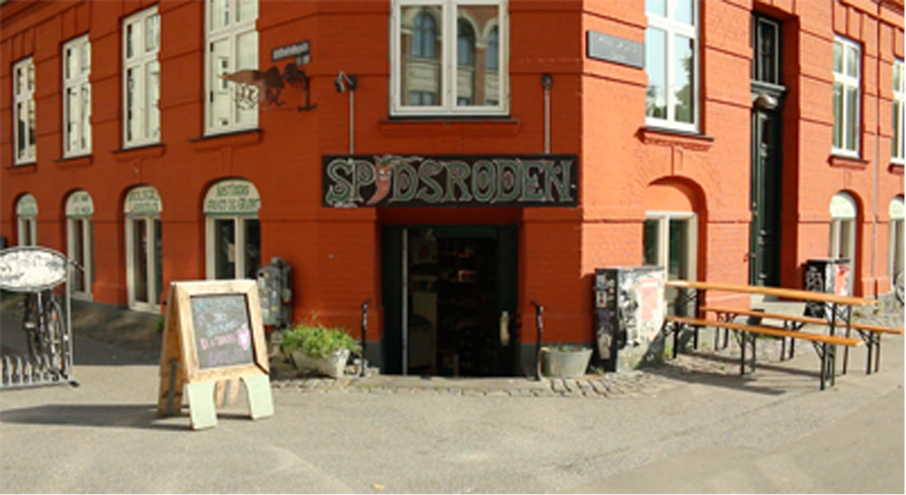

Kontakt

Spidsroden ist ein Bioladen in Nørrebro. Der Laden wurde 1997 gegründet und wird seitdem als Kooperative betrieben. Wir fühlen uns sowohl sozial als auch im Bezug zur Umwelt verantwortlich .Wir handeln deshalb soweit wie möglich mit lokalen Produkten, kleinen Firmen und bevorzugen vor allen Dingen Firmen mit einem starken umweltfreundlichen Profil für die die soziale Verantwortung und fair trade wichtig sind. Darüberhinaus boykottieren wir israelische Waren.
Wir sind sechs Personen die für den täglichen Betrieb des Geschäftes verantwortlich sind . Wir setzen uns leidenschaftlich für den Vertrieb und die Förderung von Bio Waren, nachhaltigen und veganen Produkten ein. Zur Wiedereröffnung in 2015 haben wir den Laden außerdem mit einem kleinen Café erweitert. Hier gibt es die Möglichkeit eine Tasse Kaffe mit den Nachbarn zu trinken und für die Kleinsten gibt es genügend Platz zum Spielen.
Wir laufen jeden Montag aus und bieten das Obst und Gemüse der Saison und alles von Soja Gericht bis zum Geschirrspülen. Die Preise sind 50, - für Obstsack und 100, - für grüne Tasche. Liefervereinbarungen können durch Schreiben einer E-Mail oder Umgehung des Shops für einen Chat getroffen werden. Es besteht auch die Möglichkeit, eine Box nach Vereinbarung jeden Montag nach 10:00 Uhr abzuholen.